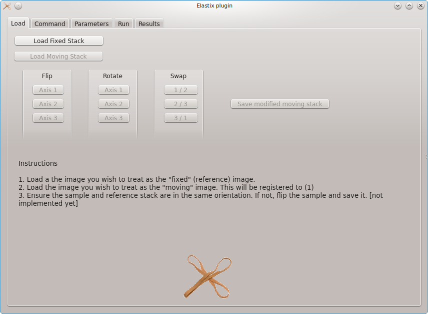
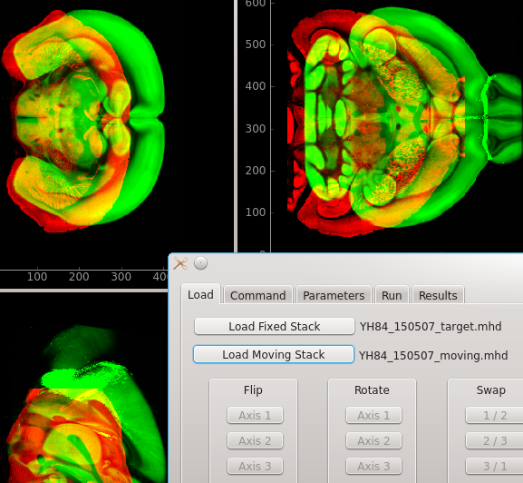
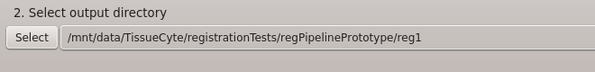
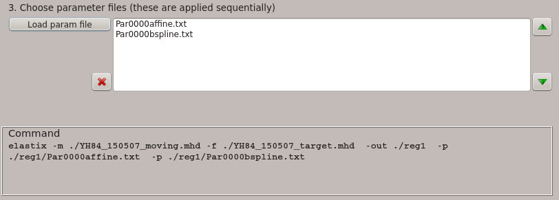
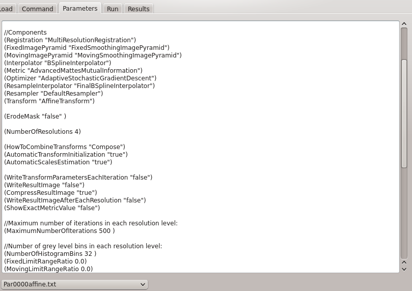
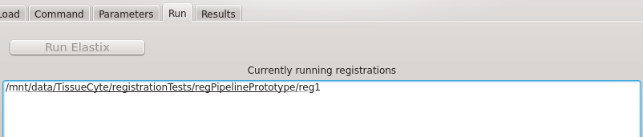
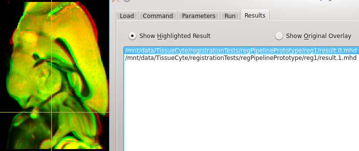
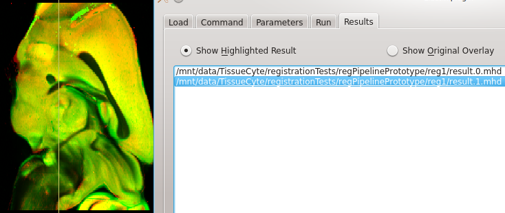

Elastix Plugin - Image Registration
Getting started
Elastix is a powerful and widely used framework for image registration. The Lasagna Elastix plugin provides a simple graphical front-end for the Elastix tools. For the plugin to run you must first download Elastix and then add it to your system path (Windows users see here). To get Elastix to do what you want, you will have to understand how configure the registration settings. A good starting point is the Elastix PDF manual. This is necessary reading for beginners.
What does the Elastix Plugin do?
The Elastix install is comprised of two binaries: elastix, which calculates transformation coefficients based on a pair of images and optionally produces the transformed (result) images, and transformix, which applies pre-existing transformation coefficients (calculated by elastix) to any desired image or a collection of sparse points. The calculation of the registration coefficients is highly configurable via a settings file that is passed as an input argument to the elastix binary. However, the Elastix tools provide no options for visualisation of the images either before or after registration. This is a problem because determining how well the registration worked is often not trivial and requires careful visual examination of the registration results. The goal of Lasagna's Elastix Plugin is to simplify this process by providing a visual workflow that goes from the original images to the registered results.
Walkthrough of the registration process
The following walkthrough shows how the Elastix Plugin is used to interactively register one image stack to another.
- We start Lasagna and open the Elastix Plugin from the Plugins menu. The plugin will fail to start if the elastix binary is not found
in the system path.
 - We then load the fixed image stack followed by the moving image stack. Elastix will attempt to register the
moving image to the fixed image. The result image produced by Elastix will therefore be a version of the moving
image that has been deformed so that it more closely matches the fixed image. The fixed image is shown in red and the moving
image in green. It is not necessary to manually provide "control points" to guide the registration, but the image stacks should be in a very
similar orientation prior to registration. Note that images should be in
MHD format.
Elastix does not work with image formats such as TIFF, as these do not contain information regarding the scale, size, and orientation
of the image (see the Elastix manual for details). Elastix will also work with other formats, such as NIFTI,
but Lasagna currently supports only MHD.
 -
Moving on to the Command tab, we select an output directory. The results of each registration
should be stored in a different output directory. A good way of trying out different registration
parameters is to conduct each registration in a different sub-directory within the directory that contains
the moving image. In this example, the moving image is in:
/mnt/data/TissueCyte/registrationTests/regPipelinePrototype
and we're placing this registration in:
/mnt/data/TissueCyte/registrationTests/regPipelinePrototype/reg1
Note we can not proceed until you have defined a registration output directory.  -
With the output directory defined, we next need to choose the parameters for the registration. To obtain good results with Elastix it is critical to correctly set up the parameter file. Example parameter files can be found in the Elastix Wiki and information on correctly setting up a parameter file can be found in the Elastix manual.
In our case, examination of the fixed and moving images (above) reveals that that the moving image (green) needs to be translated, possibly have its aspect ratio changed (scaled differently along different axes), and locally deformed in order to match idiosyncrasies in the fixed image. The first two transformations are affine (which also includes other operations such rotation and shear), whereas the third transformation will involve local non-linear deformations. When presented with this scenario, standard image registration practice is to conduct a two-step alignment. First the affine parameters are calculated, to get the image stacks in rough alignment, and then the non-linear (warping) transformation is calculated.
To conduct a two-step registration with the Elastix Plugin select select "Load param file" on the Command tab and either shift-click to select multiple parameter files or go repeatedly to "Load param file" in order to load as many parameter files are needed. Loaded parameter files appear in the list box to the right of the load button and will be applied in the order in which they are listed. In this example the affine parameter file will be applied before the B-spline (non-linear) file. The system command that will be executed to initiate the registration is shown in the box at the bottom of the tab. Parameter files can be removed by selecting and hitting the cross button or have their order changed by selecting and hitting the up and down buttons.
 -
We are now ready to tweak the parameter files (if desired) in the Parameters tab. Currently this is done simply by editing the raw file. The parameter file to be edited can be chosen by the drop-down box at the bottom of the tab. The original parameter file is not modified. Instead, a copy is created and this copy will be stored in the registration output directory.
In this case we noticed that the "WriteResultImage" setting is set to "false" for the first (affine) step. It is set to "true" for the B-spline parameter file. If we leave it this way, we will get single result image that shows the consequence of applying sequentially the affine and then the B-spline steps. To illustrate the progression in registration accuracy we choose to set "WriteResultImage" to "true" for the affine step as well. This is done simply by editing the text on the screen.
 -
To run the registration with these settings, we go to the Run tab and click "Run." The registration begins and the path to the output directory is added to the list of running registrations below the run button. In this case the registration takes roughly 7 minutes. It is possible to start a new registration whilst the first one is still running: simply go back to the command tab and select a new output directory and new parameter files, then press "Run". The second registration will be appended to the list of running registrations. Once a registration finishes it is automatically removed from the list of running registrations. For this to happen, the registration must terminate successfully. If the registration crashes it will not be removed from the list.
 -
If the registration completes with results files written to the registration directory, these will appear on a list in the Results tab. In our case we have two images: result.0.mhd shows the consequence of applying the affine step only; result.1.mhd shows the consequence of applying the affine step and the non-linear warping step. To see the results simply click the "show highlighted result" radio-button then select an image from the list. The non-linear warping produces substantially better results to the affine step alone:
  - Transformation of sparse points.
- Calculating inverse transforms.
- Overlay of deformation fields.
- The option of a GUI (something like this) for setting at least the more common parameters.
Where next?
The Elastix Plugin and image registration in Lasagna is still under development. Planned features include:
{kind=link}